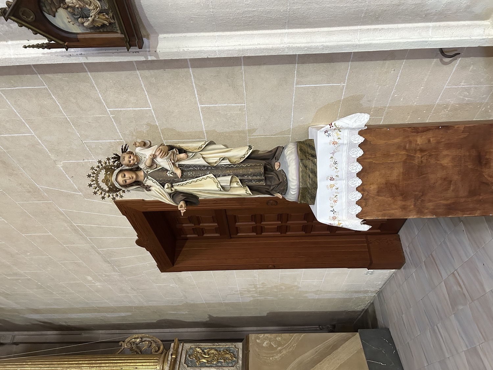

La Virgen del Carmen es una de las advocaciones de la Virgen María más antiguas y populares. Su nombre procede del monte Carmelo (situado cerca de Haifa, Israel), donde un grupo de ermitaños fundó en el siglo XII una comunidad religiosa y dedicó su iglesia a la Virgen María. De aquella comunidad surgió la Orden de los Hermanos de la Bienaventurada Virgen María del Monte Carmelo, también conocida como Orden del Carmen, cuyos miembros extendieron por Europa el culto a su patrona.
En esta escultura, la Virgen del Carmen aparece vestida con un hábito que recuerda al carmelita, formado por túnica marrón y manto claro. Sobre el pecho lleva el escudo de la Orden del Carmen, formado por un monte coronado por una cruz que representa el monte Carmelo; tres estrellas de seis puntas, interpretadas a menudo como una referencia a la Virgen María, la central, y a los profetas Elías y Eliseo, las laterales; y una corona, que simboliza el Reino de Dios. Sostiene con la mano izquierda al Niño Jesús, mientras que con la derecha hace el gesto de sostener un escapulario, que probablemente se ha perdido. El Niño Jesús hace gestos semejantes con sus manos. Los escapularios desempeñan un papel muy importante en la devoción a la Virgen del Carmen. Según la tradición, en una aparición a san Simón Stock la Virgen le ofreció un escapulario y le prometió que quienes lo llevaran al morir se salvarían del fuego eterno, y en una aparición posterior al futuro papa Juan XXII le prometió que cada sábado acudiría al purgatorio para rescatar las almas de quienes hubieran muerto llevando el escapulario.